CAPA

Página 1
Página sem conteúdo.
Página 2
Palavra da Presidência e da Superintendência
Em 2025, a Fundação Dorina Nowill para Cegos viveu um dos anos mais significativos de sua trajetória recente. Ao longo dos meses, nossas equipes atuaram com compromisso e integração para garantir não apenas a continuidade das atividades, mas também a expansão do nosso impacto, mesmo em um cenário de importantes transformações estruturais.
O período foi marcado pelo avanço das obras e pela consolidação da Unidade 2, ampliando nossa capacidade de atendimento e preparando a instituição para um novo ciclo de crescimento. Esse movimento acontece em um momento simbólico, de preparação para a celebração dos 80 anos da Fundação, completados em 2026.
Mesmo diante dos desafios operacionais decorrentes dessas mudanças, alcançamos resultados expressivos. Registramos o maior número de atendimentos da nossa história, ampliamos ações de busca ativa e fortalecemos o acesso de pessoas cegas ou com baixa visão a serviços essenciais de reabilitação, educação e inclusão.
Seguimos investindo também na ampliação de parcerias estratégicas, especialmente com o poder público e com instituições nacionais e internacionais, fortalecendo a presença da Fundação Dorina Nowill para Cegos como referência em acessibilidade e inclusão. A participação em espaços globais e o ingresso em redes internacionais reforçam esse posicionamento e ampliam o alcance do nosso trabalho.
Mais do que um ano de conquistas, 2025 foi um período de fortalecimento das bases institucionais. Cada avanço representa o compromisso com a qualidade do atendimento, com a sustentabilidade da organização e com o futuro das pessoas que atendemos.
Seguimos, assim, certos de que os próximos anos trarão ainda mais oportunidades de ampliar nosso impacto e transformar vidas por meio da inclusão.
Eduardo de Oliveira
Presidente do Conselho de Curadores
Alexandre Munck
Superintendente Executivo
Sobre a Fundação Dorina Nowill para Cegos
Promover a autonomia e a independência de pessoas cegas ou com baixa visão, ao mesmo tempo em que sensibiliza a sociedade sobre a importância da inclusão e da acessibilidade, é o que move a Fundação Dorina Nowill para Cegos.
A instituição nasceu da iniciativa de Dorina Nowill, educadora que perdeu a visão ainda jovem e transformou sua própria experiência em um compromisso com a ampliação do acesso à leitura no Brasil. Em 1946, criou a então Fundação para o Livro do Cego, dando início à produção de livros em braille no país (atividade que permanece como uma das bases do trabalho até hoje).
Ao longo das décadas, a Fundação expandiu sua atuação e incorporou novas frentes, desenvolvendo soluções nas áreas editorial, gráfica, audiovisual e digital, além de estruturar serviços especializados de habilitação, reabilitação e apoio às famílias.
Reconhecida no Brasil e no exterior pela qualidade de seu trabalho, a Fundação Dorina segue ampliando projetos, parcerias e tecnologias, mantendo vivo o compromisso que deu origem à sua história: garantir acesso, autonomia e participação plena para pessoas com deficiência visual em todos os espaços da sociedade.
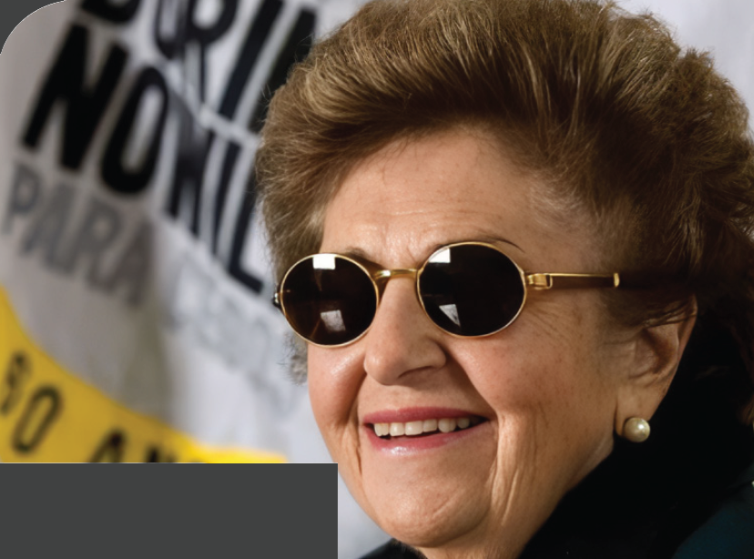
LEGENDA: Dorina Nowill. FIM DA LEGENDA.
Página 3
Propósito, Valores & Visão
Nosso PROPÓSITO
Promover a inclusão e a acessibilidade às pessoas cegas e com baixa visão, para juntos transformar vidas e a sociedade.
Nossos VALORES
• Ética é inegociável.
• Transparência no que fazemos e como fazemos.
• Respeito é tão bom que não dispensamos.
• Diversidade é um fato; inclusão é nossa escolha.
• Perseverança em tudo que fazemos, por isso não desistimos.
• Compromisso com nosso propósito.
• Inovação para construir o futuro valorizando o nosso legado.
Nossa VISÃO
Ser reconhecida mundialmente como referência em protagonismo inclusivo, expandindo, inovando e multiplicando ações de impacto para todas as gerações.
Números da Deficiência Visual no Mundo
No Brasil, dados do IBGE indicam que aproximadamente 6,5 milhões de pessoas têm deficiência visual, sendo cerca de 528 mil pessoas cegas e mais de 6 milhões com grande dificuldade para enxergar, caracterizada como baixa visão. Esses números reforçam a necessidade de políticas públicas, serviços especializados e iniciativas voltadas à acessibilidade, à reabilitação e à ampliação da autonomia das pessoas com deficiência visual.
Segundo a Organização Mundial da Saúde (OMS), entre 60% e 80% dos casos de cegueira poderiam ser evitados com diagnóstico precoce e tratamento adequado.
No Brasil
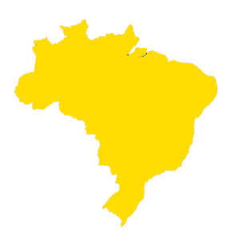
6,5 MILHÕES
de pessoas com deficiência visual
528 MIL
pessoas cegas
MAIS DE 6 MILHÕES
com baixa visão
Acesso à Informação
A Fundação Dorina Nowill para Cegos amplia o acesso ao conhecimento por meio da produção de conteúdos acessíveis em diferentes formatos, garantindo que pessoas cegas ou com baixa visão possam estudar, se informar e participar ativamente da sociedade.
Ao longo de 2025, a instituição manteve um alto volume de produção nas áreas de áudio, vídeo, digital e braille, consolidando-se como referência nacional na adaptação e disponibilização de conteúdos acessíveis.
ÁUDIO
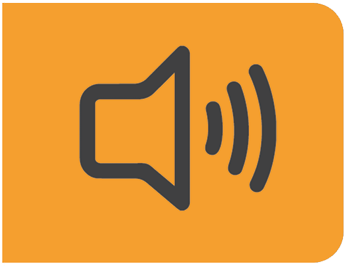
264
PROJETOS
totalizando 43.640 páginas
VÍDEO
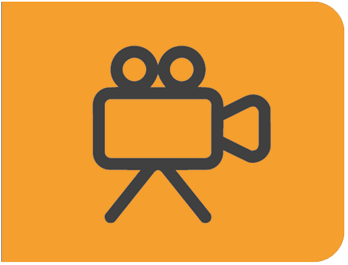
481
VÍDEOS PRODUZIDOS
sendo 420 voltados à produção de acessibilidade, com audiodescrição, LIBRAS e legenda para surdos e ensurdecidos (LSE).
EDITORIAL DIGITAL
PÁGINAS CONVERTIDAS:
59.383
TÍTULOS ACESSIBILIZADOS:
1.437
BRAILLE
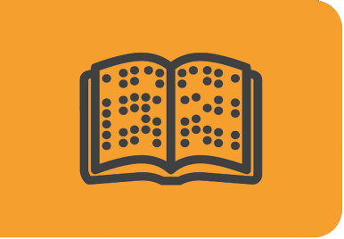
TOTAL GERAL DE PÁGINAS IMPRESSAS NA GRÁFICA
11.002.304
TOTAL GERAL DE PÁGINAS EDITORADAS NO EDITORIAL
320.291
Página 4
Dorinateca
Biblioteca Digital da Fundação
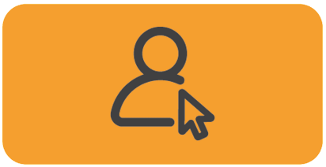
3.244
usuários cadastrados
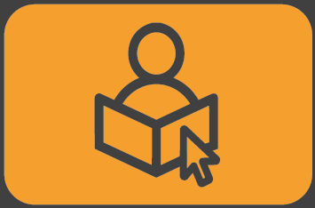
2.020
leitores ativos
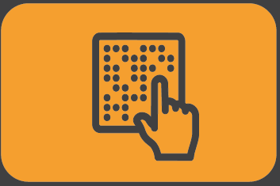
2.427
downloads de livros
5.735
obras acessíveis disponíveis
Rede de Leitura Inclusiva
A Rede de Leitura Inclusiva atua na articulação com instituições das áreas de educação, leitura e cultura em todo o Brasil, promovendo a distribuição de livros acessíveis e o diálogo sobre a implementação de práticas de acessibilidade em diferentes espaços.
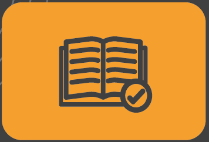
100
ações realizadas
2.678
participantes (presencial + virtual)
1.612
instituições atendidas
LEGO® Braille Bricks
Criado em 2020, o projeto LEGO® Braille Bricks é uma iniciativa desenvolvida pela Fundação Dorina Nowill para Cegos em parceria com a Fundação LEGO, da Dinamarca, com o objetivo de apoiar o processo de alfabetização de forma inclusiva.
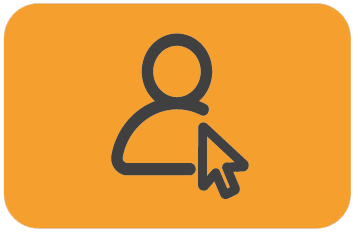
5.149
educadores participantes
1.261
escolas participantes
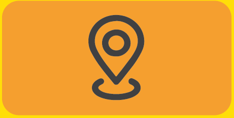
85
municípios envolvidos
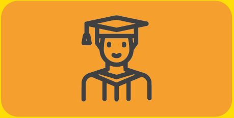
+49 MIL
estudantes impactados
Acesso à autonomia
A área de Habilitação e Reabilitação é a principal porta de entrada da Fundação para pessoas cegas ou com baixa visão, iniciando o desenvolvimento da autonomia e da inclusão junto também às suas famílias. Em 2025, foram realizados 55.444 atendimentos, com destaque para o crescimento do atendimento a crianças, impulsionado pelo diagnóstico precoce e ações de busca ativa. Ao longo do ano, a área ampliou suas atividades, fortaleceu a equipe, consolidou práticas como a musicoterapia e o Takkyu Volley e implantou a Clínica de Visão Subnormal na Unidade 2, além de expandir parcerias com outras instituições.
![Imagem: Fotografia. Sete pessoas estão sentadas ao redor de uma mesa azul de tênis de mesa, com uma rede ao centro e uma bolinha laranja. Cada pessoa segura uma raquete adaptada sobre a mesa, a raquete é composta por um suporte preto retangular. Ao centro, um homem com cabelos castanhos curtos, usa camisa polo rosa com listras brancas e segura uma raquete adaptada, próximo à raquete há uma bolinha de tênis de mesa laranja. À esquerda, uma mulher com cabelos longos e ruivos, usa blusa preta. Ao lado dela, uma mulher com cabelos curtos e castanhos, usa blusa cinza. À esquerda, quatro homens: dois possuem cabelos grisalhos curtos e usam camisa de cores claras; outro usa boné preto e blusa preta; e o último usa boné cinza. Ao fundo, uma menina com os olhos fechados e um homem segurando as mãos dela, eles estão sentados em cadeiras; atrás, brinquedos de parque infantil. Fim da imagem.](../resources/images/image_Image12853.png)
LEGENDA: Prática de Takkyu Volley. FIM DA LEGENDA.
2.215
clientes
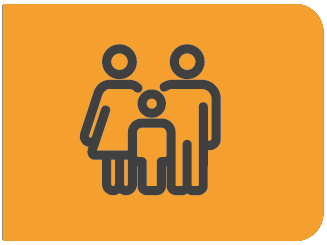
2.585
familiares
55.444
atendimentos
Página 5
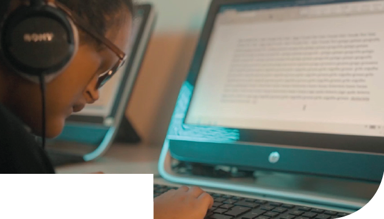
LEGENDA: Curso de Informática. FIM DA LEGENDA.
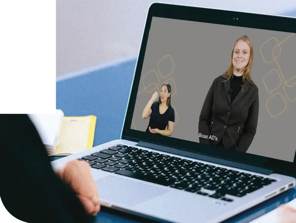
LEGENDA: Central de Formações. FIM DA LEGENDA.
Acesso à Educação
Cursos
Em 2025, a Fundação ampliou suas ações formativas, oferecendo novos cursos e fortalecendo o desenvolvimento pessoal e profissional de pessoas cegas ou com baixa visão. Ao longo do ano, 490 alunos participaram das atividades em diferentes áreas, como arte, atendimento ao cliente, coral, empreendedorismo, informática, inglês, marketing digital, massoterapia, meditação, musicografia braille, musicoterapia, teatro e técnicas administrativas, além de turmas específicas para adolescentes.
As formações contribuem para o fortalecimento da autonomia, ampliando oportunidades de inserção social e desenvolvimento de habilidades para a vida cotidiana e profissional.
Central de Formações
Em 2025, a Central de Formações ampliou sua oferta e impacto. O curso de Introdução à Audiodescrição foi reformulado e contou com três turmas, além da realização de duas turmas de Narração Presencial de Audiolivro.
Ao todo, 920 ALUNOS participaram dos cursos na Central de Formações, um crescimento de 59% em relação a 2024. Desses, 118 alunos com deficiência visual tiveram acesso gratuito às formações, ampliando o alcance das ações de qualificação em acessibilidade.
Escaneie o QR Code e conheça nossos cursos.
Acesso ao Trabalho
Em 2025, a área de Empregabilidade manteve seu foco na orientação profissional e na preparação de pessoas cegas ou com baixa visão para o mundo do trabalho. Ao longo do ano, 374 pessoas foram atendidas, por meio de acompanhamentos individuais e atividades formativas voltadas ao desenvolvimento de habilidades e à inserção profissional.
As ações de sensibilização também foram ampliadas, com palestras, workshops e eventos que alcançaram 3.351 pessoas, fortalecendo o diálogo com empresas e promovendo a inclusão no mercado de trabalho.
No relacionamento com o setor corporativo, a Fundação atuou junto a 201 empresas, ampliando parcerias e contribuindo para a construção de ambientes mais acessíveis e inclusivos.
374
clientes em orientação profissional
3.351
pessoas conscientizadas
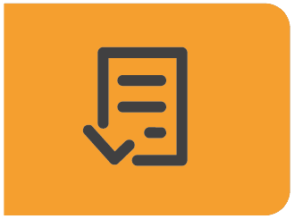
201
empresas parceiras
Página 6
GRÁFICO 1
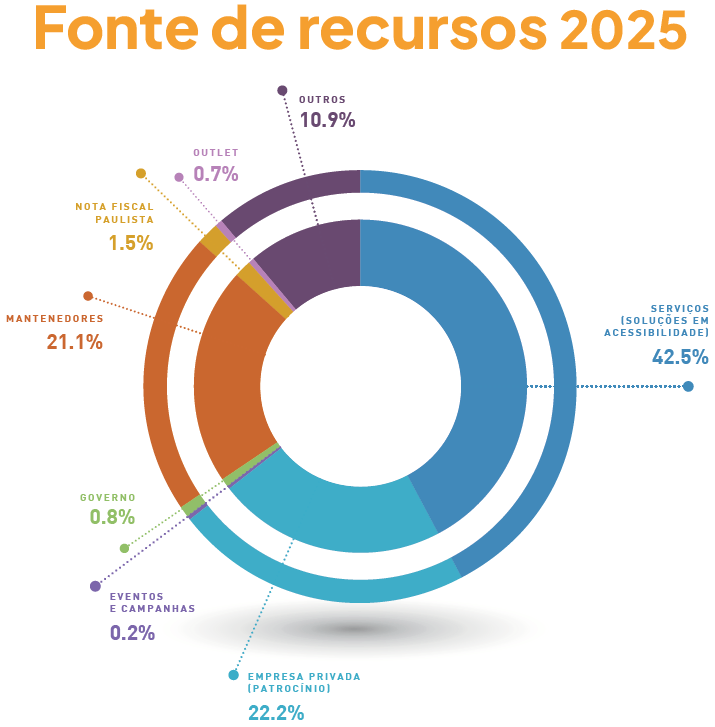
GRÁFICO 2
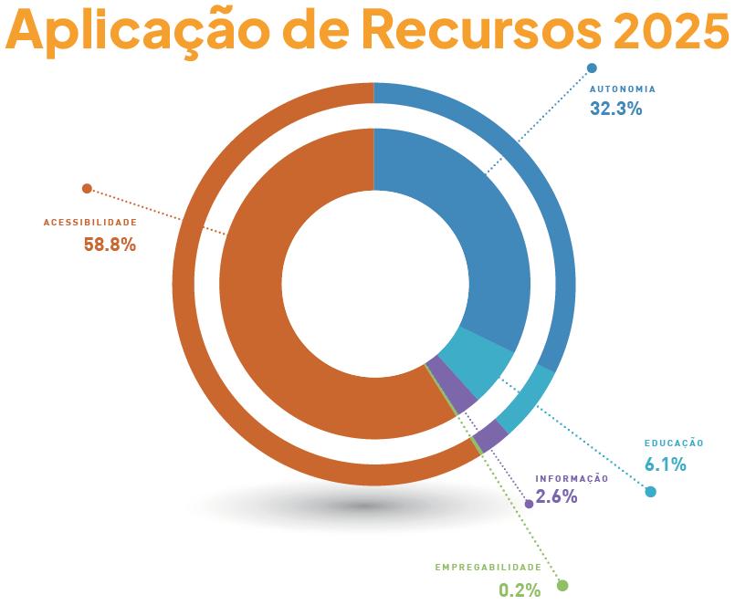
Página 7
Parceiros de Visão
Conheça as empresas que contribuíram para as conquistas e avanços da Fundação Dorina, por meio de patrocínios, doações e apoio aos projetos realizados ao longo do ano:
DIAMANTE |
|
OURO |
|
BRONZE | |
COBRE |
|

![Imagem: Logotipo do Banco Daycoval composto pelo nome em letras cinzas e azuis e, no canto inferior esquerdo, ilustração de um pequeno retângulo cinza e azul. Logotipo da Loga composto pelo nome em letras pretas, sendo as letras O, G em azul e verde formando o símbolo do infinito. Logotipo da Fundação Prada composto pelo nome em letras maiúsculas pretas e, acima, a ilustração de uma árvore com folhas verdes e azuis. Logotipo do Instituto Rodobens composto pelo nome em letras verdes. Logotipo da Tenda atacado composto pelo nome em letras brancas sobre um retângulo azul e vermelho. Fim da imagem.](../resources/images/image_img26.png)
![Imagem: Logotipo da Atlas Schindler composto pelo nome em letras vermelhas; acima, a ilustração de um círculo cinza com um triângulo no centro, na parte inferior. Logotipo da Bic composto pelo nome em letras maiúsculas pretas dentro de um retângulo laranja; à esquerda, ilustração de um boneco com cabeça de esfera preta e roupa amarela, ele segura uma caneta atrás do corpo. Logotipo da Bic Corporate Foundation composto pelo logotipo da Bic e, abaixo, o nome em letras pretas. Na parte inferior, a frase ’We Give to Create’; no canto superior esquerdo, arabescos coloridos. Logotipo da CART, composto pela ilustração da silhueta de um retângulo na vertical sobre um círculo em azul e amarelo; abaixo, o nome em letras maiúsculas azuis. Logotipo da FF Seguros composto pelo nome em letras azuis, entre as palavras há a ilustração de dois símbolos de maior que em preto. À direita, na parte inferior, o texto ’A FAIRFAX Company’. Logotipo do Instituto Helena Florisbal composto pelo nome em letras maiúsculas verdes e, à esquerda, a ilustração da silhueta de uma pessoa de palito com os braços para cima. Logotipo do Instituto de Responsabilidade Societe Generale composto pelo nome em letras maiúsculas pretas e, à esquerda, a ilustração de um quadrado vermelho e preto. Logotipo da Alupar composto pelo nome em letras azuis com uma barra verde na parte superior. Logotipo da Taesa composto pelo nome em letras minúsculas azuis com um asterisco colorido no canto superior direito. Logotipo da Trench Rossi Watanabe, composto pelo nome em letras vermelhas e um ponto final vermelho. Fim da imagem.](../resources/images/image_img28.png)
Página 8
Faça parte dessa história
SERVIÇOS DE APOIO À INCLUSÃO
Atendimento às pessoas cegas e com baixa visão.
 atendimento@fundacaodorina.org.br
atendimento@fundacaodorina.org.br
 (11) 5087-0999 – Opção 2
(11) 5087-0999 – Opção 2
 (11) 5087-0998
(11) 5087-0998
VISITA MONITORADA
 centrodememoria@fundacaodorina.org.br
centrodememoria@fundacaodorina.org.br
 (11) 5087-0955
(11) 5087-0955
CANAL DE RELACIONAMENTO COM O DOADOR
Faça uma doação e ajude a transformar a vida de pessoas com deficiência visual.
 relacionamento@fundacaodorina.org.br
relacionamento@fundacaodorina.org.br

 (11) 5087-0999 – Opção 4
(11) 5087-0999 – Opção 4
PATROCÍNIOS E PARCERIAS
Apoie os projetos da Fundação Dorina por meio das Leis de Incentivo, para abatimento de impostos, ou fazendo patrocínios diretos.
 parceria@fundacaodorina.org.br
parceria@fundacaodorina.org.br
 (11) 5087-0982
(11) 5087-0982
SOLUÇÕES EM ACESSIBILIDADE
Contate nossa equipe para tornar seus produtos e serviços mais acessíveis.
 comercial@fundacaodorina.org.br
comercial@fundacaodorina.org.br

 (11) 5087-0999 – Opção 1
(11) 5087-0999 – Opção 1
SEJA UM VOLUNTÁRIO
 voluntariado@fundacaodorina.org.br
voluntariado@fundacaodorina.org.br
 (11) 5087-0971
(11) 5087-0971
Expediente
Superintendência Executiva
Alexandre Munck
Gerência de Captação de Recursos e Comunicação & Marketing
Taisa Pelucio
Coordenação de Comunicação & Marketing
Carolina Orilio
Produção de Conteúdo
Danielle Bambace – W5 Publicidade
Revisão
Carolina Orilio
Projeto Gráfico
Beto Paixão – W5 Publicidade
Diagramação
Malu Paiva – W5 Publicidade
Apoio
Cláudia Piazza Costa
Rodrigo Torres
Fotografias
Acervo da Fundação Dorina
Cecília Furtado
Cléo Acevili
Fernando Pimentel
Rodrigo Torres
Direção Artística
W5 Publicidade

Fundação Dorina Nowill para Cegos
Unidade I
Rua Doutor Diogo de Faria, 558
Vila Clementino – SP
Unidade II
Rua Estado de Israel, 289
Vila Clementino – SP
 +55 (11) 5087-0999 / (11) 5554-0999
+55 (11) 5087-0999 / (11) 5554-0999
 fundacaodorina.org.br
fundacaodorina.org.br
SIGA A FUNDAÇÃO DORINA NAS REDES SOCIAIS
fundacaodorinanowill
fundacaodorina
fundacaodorina
 fundacaodorina
fundacaodorina
Escaneie o QR Code e tenha acesso à VERSÃO COM ACESSIBILIDADE